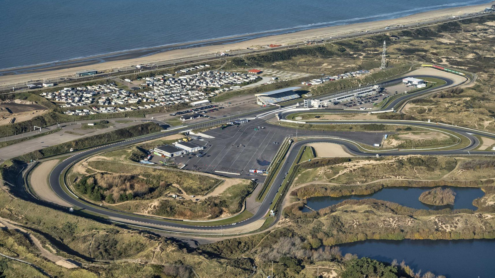

DUTCH GRAND PRIX
Cicuit Length:
4,259 km (2.671 mi)
Turns:
15
Number of Laps:
77 (1985)
First Grand Prix:
1948
Race Distance:
297,6 km (1985)
The race in The Netherlands takes place in Zandvoort. Zandvoort is a township in The Netherlands,
about 17 thousend people live in Zandvoort. And across The Netherlands live about 17,3 Million inhabitants. So far the record holder
of this circuit is Alain Prost. The Grand Prix of the Netherlands is a Formula 1 race that was held thirty times between 1952 and 1985. After an absence of 35 years, the race would return to the Circuit Zandvoort from 2020, but this has been postponed to 2021. Jim Clark is the record holder of the grand prix with four wins. This year (2021) the race will be on September 1. The fastest speed possible is 305 km/h. The only current f1 driver who has ever driven on the new Circuit is Max Verstappen.

Winners of the Dutch GP
2020 - Not Held
2019 - Not Held
2018 - Not Held
2017 - Not Held
2016 - Not Held
2015 - Not Held
2014 - Not Held
2013 - Not Held
2012 - Not Held
2011 - Not Held
2010 - Not Held
2009 - Not Held
2008 - Not Held
2007 - Not Held